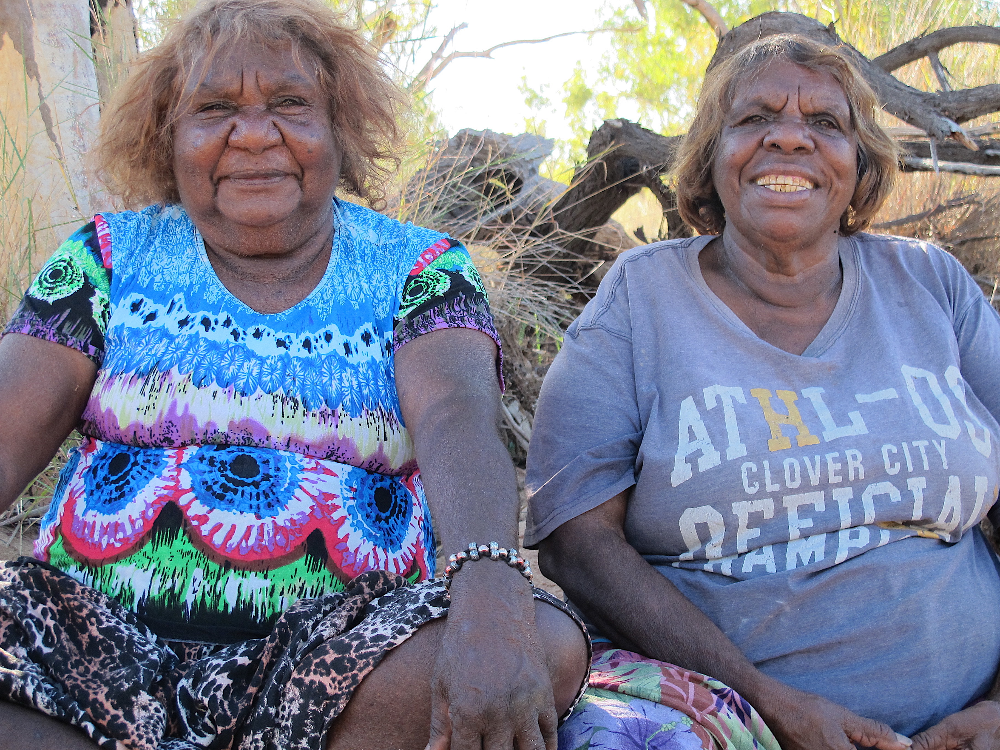
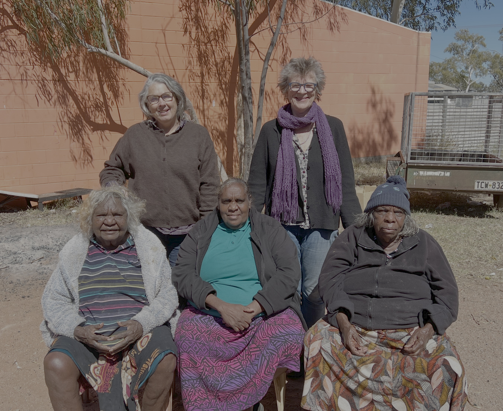

About
Angkety anantherr apwertelh-iletyeh – we are gathering the stories together is a website that provides a guide to the contributions to language and culture of three prominent women who live at Ti Tree in Central Australia – April Pengart Campbell, Clarrie Kemarr Long and Eileen Perrwerl Campbell. The website is designed for younger generations and for students who study far away from Ti Tree and want access to cultural and historical stories. It is also a celebration of the significant achievements of these three women.
April Pengart Campbell
April is an educator, artist and author and a role model for her Anmatyerr people. She currently works teaching language and culture at Ti Tree School.

April Pengart Campbell
Jennifer Green
Clarrie Kemarr Long and Eileen Perrwerl Campbell
Clarrie (Anmatyerr/Warlpiri) and Eileen (Anmatyerr) are elders who have long been involved in supporting language and culture at Ti Tree School. They are experts on spoken languages, signed languages, women’s ceremonial songs and dances, and sand stories. They are April’s close family and important cultural teachers.

Clarrie Kemarr Long and Eileen Perrwerl Campbell
Jennifer Green
Acknowledgements
We thank all the families of April, Clarrie and Eileen who have supported and encouraged us to make this website. Young people are really excited, and they are looking forward to seeing and using it. Also acknowledged is Seraphina Pengart Presley. As a teenager, April was inspired by Seraphina, who played an important role in April’s learning to become a language teacher. Seraphina taught April to read and write in Anmatyerr, and she taught her how to plan and teach two-ways – western way and in her first language.
Research, consultation and website design by April Campbell, Jennifer Green (The University of Melbourne), Angela Harrison (Batchelor Institute), and Ben Foley (University of Queensland). We also thank those who provided content and feedback, including Myfany Turpin, Steve Berry, Jason Gibson, Margaret Carew, David Strickland, Mingfang Strickland XX.

Clarrie Kemarr Long, April Pengart Campbell, Eileen Perrwerl Campbell, Angela Harrison, and Jennifer Green, Ti Tree, 2025
Peter XX
Funding
The Language Data Commons of Australia (LDaCA) project receives investment from the Australian Research Data Commons (ARDC) through its HASS and Indigenous Research Data Commons program. The ARDC is funded by the National Collaborative Research Infrastructure Strategy (NCRIS). Batchelor CALL is funded through the Indigenous Languages and the Arts program.
This project is an International Decade of Indigenous Languages project.
How to cite this page
Campbell, April Pengart, Jennifer Green, Angela Harrison and Ben Foley.XXXX. Alice Springs: Batchelor Institute. (https://www.veronicadobson.au/.) (Accessed YYYY-MM-DD).
Contact us
Email us with any feedback about the site.